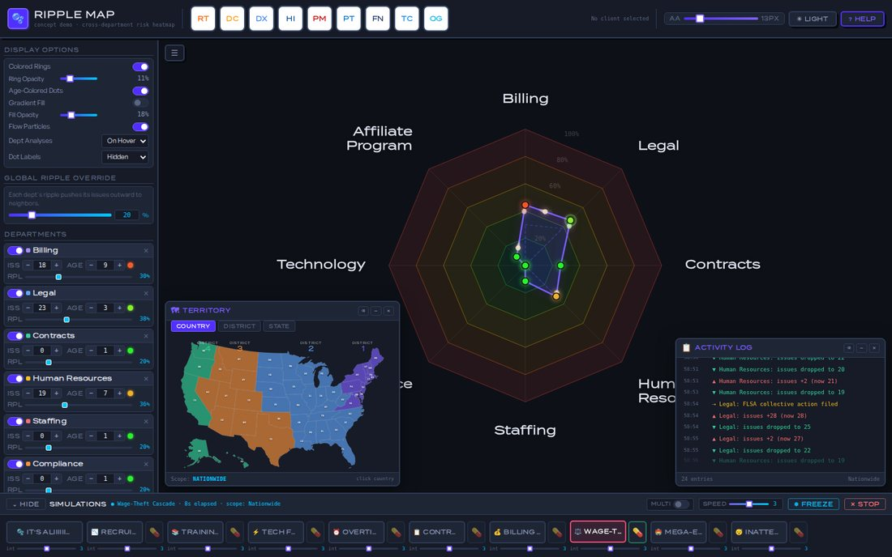
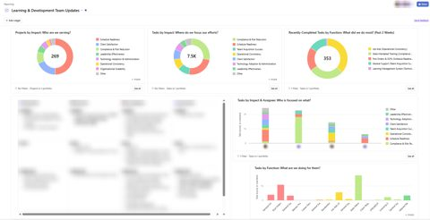
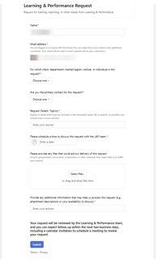
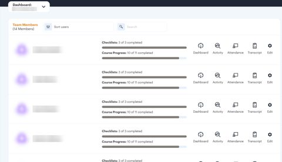
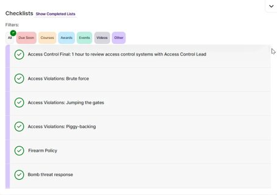

Technology
Exploring new technologies and closing the digital divide.

Platform pilots & rollouts
I'm usually the one who tries a new tool first, figures out where it helps, and then trains everyone else.
- 2026–27 Enterprise learning platform migration: moving courses, learner records, and completion reporting into a new enterprise HR and learning platform, and getting staff comfortable in the new system.
- 2025–26 Organization-wide Asana support: trained teams, recorded video tutorials, tracked who completed them, and built portfolios and project templates for L&D reporting.
- 2021–23 ClassroomScreen pilot, plus HB4545 student support: tracking progress in the Edgenuity LMS and reporting to support staff and families.
- 2021 Screencasting software pilot for recorded lessons and feedback.
- 2020–22 District Newsela rollout: leveled nonfiction reading and low-stakes writing practice.
- 2020–21 Zoom orientation for students and staff when classes moved online.
- 2019–20 Nearpod pilot: interactive, self-paced lessons for in-person and remote classes.
- 2017–18 ClassCraft pilot: rebuilt district English units as gamified pathways and presented them to my professional learning community.
- 2015–17 Campus-wide Canvas rollout, then Canvas Trainer of Trainers: hands-on sessions for 140+ educators, and 100% campus adoption in the first month.
- 2014–15 Steam for Schools pilot (Valve's free classroom edition of Steam) at a middle school in Alaska: students in grades 5–8 designed Rube Goldberg machines in the Portal 2 Puzzle Maker and tested gravity and orbits in Universe Sandbox.
I have also led long-term adoptions of Ditto, Gimkit, Remind, Quizlet, and ClassDojo across Allen ISD and the North Slope Borough School District. Details are on the Instructional Design page.

Games as learning tools
- Steam for Schools / Teach With Portals (2014–15): alongside the Portal 2 pilot above, Kerbal Space Program let grades 5–8 experiment with physics and math, and Elegy for a Dead World taught narrative structure and published student writing.
- MinecraftEdu (2013–15): explored Minecraft as a platform for classroom projects.
- Today: I program my own quiz games for corporate training. Play them here.
Game testing
I've tested 21 games before release, from MMOs to indie puzzle games. See the full list on my Entertainment page.
Tinkering
- Wiimote Whiteboard (2011): built a portable, cross-platform interactive whiteboard from a Wii remote and open-source software, for a fraction of the cost of a SMART Board.
- Student-guided math tutorials (2013): students recorded their own video lessons on iPads with the ShowMe app.
- Automated reading journals (2014): students logged reading check-ins on Goodreads, and IFTTT collected their entries for me.
Dashboards for decision-makers

For an executive team's presentation to ownership, I designed and built a working mockup of a real-time risk management dashboard: a "living" heatmap showing how issues in one department (Staffing, Billing, Compliance, Legal, and more) ripple outward into the others. Pick a sample site type, filter by territory, and run what-if scenarios like a recruiting drought, an overtime spiral, or a botched big-event rollout, then apply a "cure" and watch the organization recover. It was a visual aid for a plan, not a production system, so all names and data here are fictional.
Reporting & LMS dashboards
Most of my technology work is less flashy: making sure leaders can see what training is happening, who it serves, and who's finished it. A few examples from my day-to-day (names, clients, and logos blurred):








Getting the most out of what we had
From 2023 to 2026, our workforce grew from about 6,500 to nearly 10,000, and our learning and HR systems onboarded and trained 16,200+ people along the way (everyone on staff in 2023 plus everyone hired since), through steady turnover, seasonal hiring, and compliance record-keeping. Most people who leave are deactivated and no longer billed, so the profiles we paid for tracked headcount. Rather than jump to a big new enterprise platform mid-growth, my team and I stretched the systems already in place as far as they would go: custom enrollments, automated reminders, the dashboards and intake form above, and a lot of careful record-keeping. That let the organization move to a new platform on its own timeline, for an estimated $5.5 million less than switching in 2023:
- A new enterprise suite: about $500 per active profile a year, or roughly $16.3M over four years for active profiles growing from 6,500 to 9,800, plus about $3.3M to set it up for 6,500 users in 2023. Total: about $19.6M.
- The systems we already had: about $430 per active profile a year, or roughly $14M over four years, with nothing new to implement.
- The difference: about $5.5M, and more than half of it is the setup fee that never had to be paid in 2023. Implementation partners price setup by the size and complexity of the first user tier, and typically charge 1 to 2.5 times the first year's license (VendorBenchmark).
When the move did come, we led it, bringing the courses, learner records, and reporting along with us.
Art from adversity: the right tool, not the priciest one
Working within a budget has made me a better builder. Before reaching for the industry-standard license, I look for the tool that does the job well for less, and when nothing fits, I build it. For our design team, that meant:
- Video editing in Descript instead of Adobe Premiere and After Effects: transcript-based editing that's faster for training videos, at about $288 a year instead of $1,080 per designer (Descript; Adobe).
- Screen recording with ShareX instead of Camtasia: free and open source, versus about $300 a year per designer (ShareX; TechSmith).
Those two choices alone save about $1,092 per designer every year, or roughly $4,400 to $5,500 a year for a team of four or five, with no drop in what we deliver.
For interactive scenarios, we use Articulate Storyline today. It's also why I'm building Scenemaker, a branching-story authoring tool that exports standard SCORM packages, so courses still run in any LMS. Used in place of Articulate 360 Teams, at about $1,400 a year per designer (Articulate), it would raise the savings to about $2,492 per designer, or roughly $10,000 to $12,500 a year for the team. Doing more with less isn't a constraint I work around; it's something I'm proud to be good at.
Tech in industry
In a 2023 externship with NETSCOUT (through Dallas Workforce Solutions and Allen ISD), I shadowed cybersecurity and network performance teams, documented their tools and roles, and turned them into case studies and career presentations for high school students.
Background
My interest in technology goes back to making video games and studying information technology at my local Career-Tech Center (A+, Network+, iNet+, MCSE and Oracle training), then computer science courses in college. In 2023 I completed Harvard's CS50.